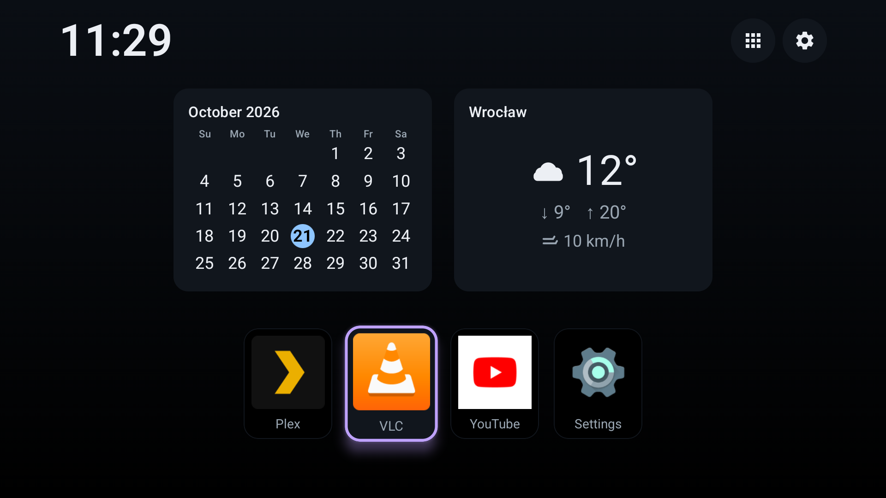
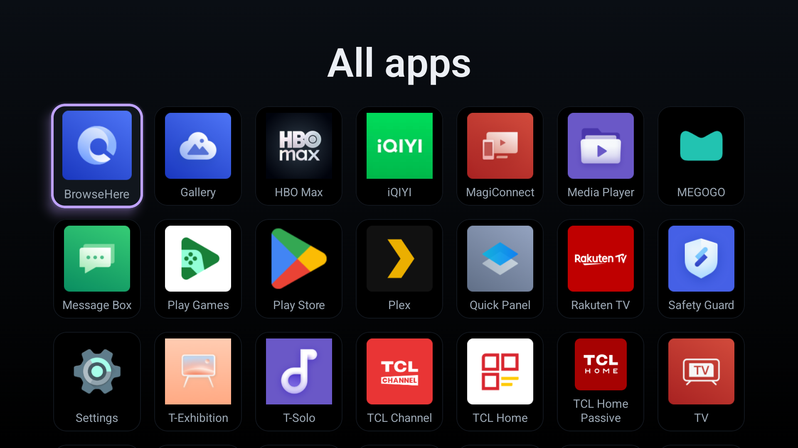
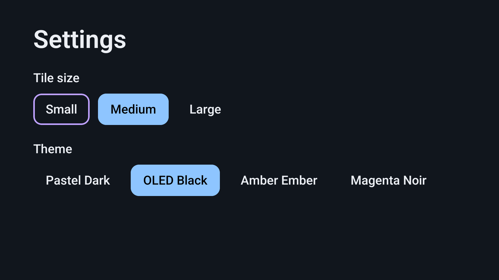

Fast & lean
A lean 5.5 MB signed APK with Baseline Profiles for a quick cold start. Heavy work stays off the render path so the grid is ready when you press Home.
NexaTV replaces your TV home screen with a clean, instant, remote-friendly launcher — no ads, no accounts, no tracking. Just your apps, your way.

Lean, respectful of your privacy, and built entirely around the remote in your hand.
A lean 5.5 MB signed APK with Baseline Profiles for a quick cold start. Heavy work stays off the render path so the grid is ready when you press Home.
Every interaction is designed for a TV remote: crisp focus glow, predictable directional navigation, and reliable focus restoration when you return.
No telemetry, no accounts, no tracking, no ads. Favorites, themes and settings stay on your device via Proto DataStore, with backups disabled.
A condition glyph, current temperature, daily high/low and wind speed — powered by the keyless Open-Meteo API. It's the only outbound network call NexaTV makes.
Four built-in color palettes — a default dark, an OLED true-black, a warm amber, and a magenta "noir" — switchable right from settings.
Sixteen time-of-day and weather scenes, with automatic or manual selection, dimming, blur and optional gentle rain or snow.
An owner-enabled accessibility service raises NexaTV when the stock launcher appears — fully reversible, and it never disables or removes the system launcher.
Real screens from the launcher — the installed-app grid and on-device settings.


Google TV firmware blocks third-party apps from taking the system ROLE_HOME role.
Instead of fighting the OS, NexaTV uses a small, owner-enabled accessibility service that brings
NexaTV to the front whenever the stock launcher appears.
Install the release build with adb install -r — no Play Store required.
You turn on NexaTV's accessibility service once, explicitly, from system settings.
When the stock launcher appears, the service raises NexaTV — so Home opens your launcher.
Disable the service to instantly return to the stock Google TV home screen.
Native Android, a professional SDLC, and a tag-driven signed release pipeline.
+ Jetpack Compose for TV (androidx.tv Material 3), fully native — no Flutter.
Architecture Decision Records capture every meaningful trade-off and choice.
Build, Android Lint, unit tests, detekt static analysis, plus APK-size & ABI gates.
Tag-driven pipeline publishes signed APKs straight to GitHub Releases.
Grab the latest signed release, sideload it, and take back your home screen — no ads, no accounts, no tracking.